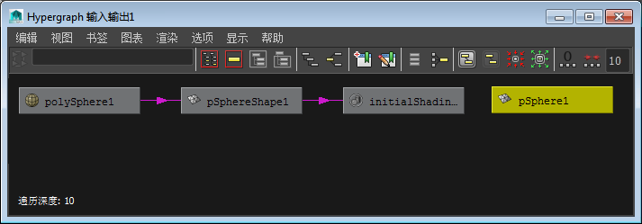
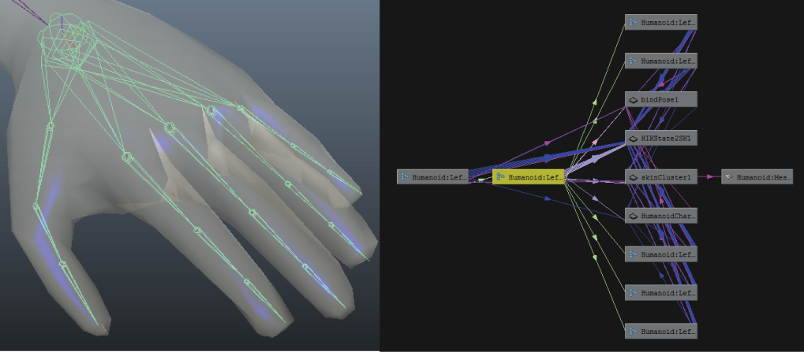

DAG 层次（也称为对象层次）是指组成对象的所有节点的父子关系。DAG 代表有向非循环图。从本质上讲，DAG 是关于如何通过一个几何体构建对象的实例的受控关键点。
对象的 DAG 层次始终包括两种类型的节点：变换和形状。
例如，在创建多边形球体时，可以在“属性编辑器”(Attribute Editor)中看到它包括一个形状节点和一个变换节点。形状节点具有用于定义几何体的属性，而变换节点包含控制球体的位置、缩放或旋转的属性。形状节点是变换节点的子对象。
注： 在 Maya API 中，将 DAG 层次节点与依存关系图 (DG) 节点进行比较。这些是相关但不同的系统，用途不同。依存关系图节点与 DAG 节点不同，可以循环，这意味着它们可以双向传递信息。
还可以通过 Hypergraph 窗口以层次形式查看 DAG 信息。

- 变换节点
- 变换节点包含变换信息（平移、旋转、缩放）以及建立父子关系信息。变换节点下面具有多个分组的子节点。节点分组允许在多个 DAG 路径中共享同一形状。（DAG 路径表示节点之间的层次链接，定义从层次的开始向下到最远的节点的方向。）
例如，如果构建手的模型并要应用单个变换以旋转手掌和手指（而非各个单独旋转），可以对手掌和手指使用公用父变换节点。

- 形状节点
- 形状节点描述几何体，不包含建立父子关系或变换信息。几何体不能在变换节点之下。这意味着任意一个几何体都需要有两个 DAG 节点在其上方，一个形状节点在其正上方，以及一个变换节点在形状节点上方。